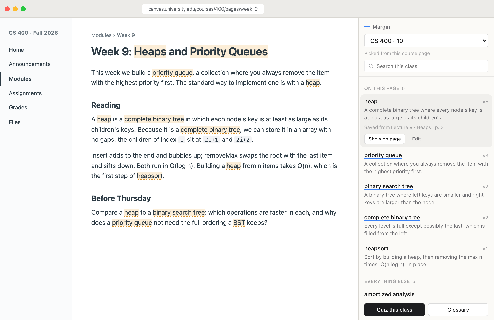

marginENGL 101The blank space beside the text on a page, where readers write what they want to remember.via Wiktionary
A free Chrome extension for the words your classes keep using. Save a term once, and Margin underlines it on your course pages and lecture PDFs with your definition one hover away.
Free, with no account. Your notes stay on your laptop.
cs400 · lecture notes
Hover a highlighted term to read it. Click a dotted one to save it.
2 of 4 terms saved
Every class has its own language. Margin helps you learn it where you read it, then hands it back to you as a glossary and a quiz.
How it works
1Select a term
Highlight a word on any page and press ⌥⇧S, click the button that appears, or right-click. Margin remembers where you found it, down to the PDF page.
2Write it, or find it
Write the definition in your own words, or let Margin find one that fits the class: textbook glossaries for psych, NIST for CS, science databases for bio and stats.
3See it wherever you study
From then on the term is highlighted on Canvas, course pages and every lecture PDF. Hover it and your definition is there, with the course and where you first saw it. Your email and YouTube stay untouched.
canvas · cs 400 · week 9
The usual way to build a priority queue is with a heap. Inserting and removing both take logarithmic time.
Because a heap is a complete binary tree, it lives happily in an array.
Save term⌥⇧S
Save to Margin
heap
DefinitionWrite my ownFind one
NIST · Algorithms and Data StructuresA complete tree where every node has a key more extreme than its parent’s.
OpenStax · Introduction to Computer ScienceStores dynamically allocated data.
CS 400Save
heapCS 400
A complete tree where every node has a key more extreme than or equal to the key of its parent.
Week 9 notesvia NIST
Definitions that know your class
Margin reads your course code, so heap in CS 400 means the data structure, and elasticity in ECON 101 isn’t about rubber bands.
24,000+textbook definitions ship inside Margin and work offline: 64 free OpenStax textbooks and 835 entries from NIST.
Where definitions come from, by course
Course
Where Margin looks
CS 400
NIST algorithms dictionary, OpenStax Intro to CS
STAT 240
Introductory Statistics, Statistics Ontology
BIO 152
Biology 2e, Gene Ontology, MeSH
PSYCH 202
Psychology 2e, MeSH
ECON 101
Principles of Economics
Built for the PDFs your professors post
Say yes once and lecture slides open in Margin’s own viewer, with your terms highlighted and the lecture’s key terms picked out for you.
Key terms, found for you
Margin reads the lecture and suggests its key terms, with definitions from the slides or the course textbook. Save five in one click.
Back to the exact page
A side panel lists the terms in the file with links to each page, and every term remembers the slide you found it on.
Web or local
Works on PDFs from course sites and on the ones sitting in your Downloads folder, with dark pages for late nights.
One class, right beside you
Open the sidebar with ⌥⇧M and it lists every term you’ve saved for the class you’re working on, with the ones on this page first. Open a different course and it switches on its own.

By Friday, your study guide already exists
Every term lands in a glossary sorted by course. When it’s time to review, Margin quizzes you, and the ones you miss come back first. Export to CSV for Anki or Quizlet whenever you like.
PSYCH 202cognitive dissonance
Your notes never leave your laptop
Everything is saved in your own browser. There’s no account, no server, no tracking and no ads. The only time Margin goes online is when you ask it to find a definition, and then it sends just the term.
Margin is open source. You can read every line on GitHub.